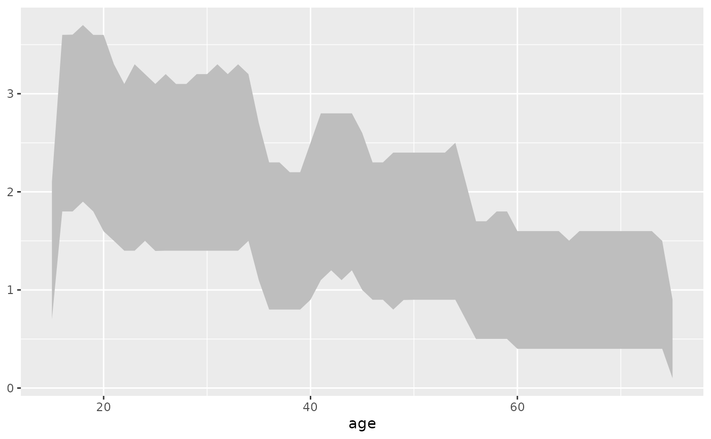
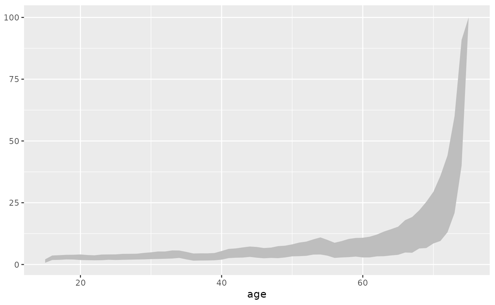

Halley band of the mortality profile of a skeletal population
Source:R/halley_band.R
halley.band.RdIn a series of papers, M. A. Luy and U. Wittwer-Backofen (2005; 2008) proposed a method they called 'Halley band' as alternative for other methods of sampling from an skeletal population. It basically involves sampling n times from the age-estimation of each individual and then only taking the 2.5th and 97.5th percentile into account. The space between, they dubbed 'Halley band' but pointed out that it is not to be confused with confidence intervals.
Arguments
- x
a data.frame with individuals and age estimations.
- n
number of runs, default: 1000.
- uncert
level of uncertainty, default: 0.95.
- agebeg
numeric. Starting age of the respective individual.
- ageend
numeric. Closing age of the respective individual.
- agerange
character. Determination if the closing age leaves a gap to the following age category. If yes (= "excluded"), "1" is added to avoid gaps, default: "excluded".
Value
One data.frame with the following items:
age: age in years.
lower_dx: Lower boundary of uncertainty for dx.
upper_dx: Upper boundary of uncertainty for dx.
lower_qx: Lower boundary of uncertainty for qx.
upper_qx: Upper boundary of uncertainty for qx.
lower_lx: Lower boundary of uncertainty for lx.
upper_lx: Upper boundary of uncertainty for lx.
References
Luy MA, Wittwer-Backofen U (2005). “Das Halley-Band für paläodemographische Mortalitätsanalysen.” Zeitschrift für Bevölkerungswissenschaft, 30(2–3), 219–244.
Luy MA, Wittwer-Backofen U (2008). “The Halley band for paleodemographic mortality analysis.” In Bocquet-Appel J (ed.), Recent advances in paleodemography. Data, techniques, patterns, volume 31 of Cambridge Stud. Biol. and Evolutionary Anthr., 119-141. Springer, Dordrecht.
Examples
# create simulated population with artifical coarsening first
pop_sim <- pop.sim.gomp(n = 1000)
sim_ranges <- random.cat()
# apply random age categories to simulated ages
sim_appl <- random.cat.apply(pop_sim$result, age = "age",
age_ranges = sim_ranges, from = "from", to = "to")
# create halley bands
demo <- halley.band(sim_appl, n = 1000, uncert = 0.95, agebeg = "from",
ageend = "to", agerange = "excluded")
# plot band with ggplot
library(ggplot2)
ggplot(demo) + geom_ribbon(aes(x = age, ymin = lower_dx, ymax = upper_dx),
linetype = 0, fill = "grey")

ggplot(demo) + geom_ribbon(aes(x = age, ymin = lower_lx, ymax = upper_lx),
linetype = 0, fill = "grey")
ggplot(demo) + geom_ribbon(aes(x = age, ymin = lower_qx, ymax = upper_qx),
linetype = 0, fill = "grey")
